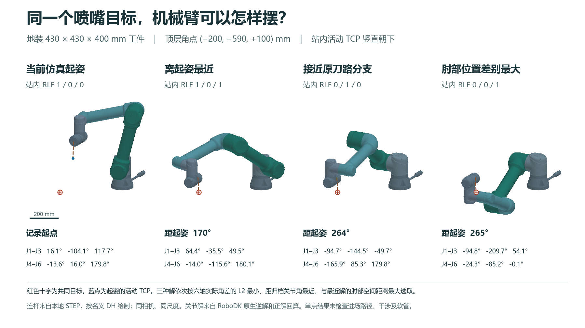

从同一个起姿出发，地装能打多大的方件？
固定喷嘴竖直朝下，把进场、五层方形轮廓、四次抬升和三层填充接成一条路。三件都用已打开的 RoboDK 工作站逐点求解，随后用修正后的关节角检查刚体碰撞。
回放关节实际走过的路线
棕色表示参与检查的喷头外包盒。可拖动、缩放或逐帧查看。播放按节点快进，时间与真实打印速度无关。
同一起姿下的尺寸取舍
| 方形边长 | 工件高 | 底面面积 | 奇异余量¹ |
|---|
390 mm 方案比 405 mm 方案多 30 mm 打印高度，沿刀路的奇异余量也更大。405 mm 方案多出约 7.8% 底面面积。
当前方案
¹ 取打印段归一化雅可比最小奇异值下界，本实验门槛为 0.02，数值越高，离门槛越远。最大单轴转角衡量沿这条刀路每移动 1 mm，转动最多的关节需要转多少。
这次起姿从哪里来？
六轴角度保留原始圈数。这个起姿来自仿真站，实际管线的初始状态尚待测量。
为什么原来的 430 mm 地装姿势看着别扭？
原位置的顶层起印角保持同一位置和方向，给 RoboDK 不同的起始关节角，能找出 种构型。固定当前起姿后，试四个起印角、顺逆两个方向和四种喷头滚转，32 个组合均未通过初筛。
即使把仿真起姿移到起印角上方 75 mm，让它能直接进场，走底层第一条边时仍会发生干涉。在名义装配位置，腕部与喷头组件的原始三角网格有 个采样帧相交。
该件的 2 mm 网格中， 个固定喷嘴方向能覆盖所有采样位置，其中包括竖直朝下。点位求解之后仍须检查进场、连续运动和实体干涉。
放大查看同一点的不同构型

换工具或更改布线会怎样？
三个通过方案采用历史喷嘴标定。当前站内工具中心与它相差 56.56 mm。在 300 mm 工件上改用站内工具重新求解，喷嘴仍能跟踪刀路，但按同一历史喷头安装，六条候选进场方式均出现几何干涉。实机复核要使用同一套喷头几何和工具标定。
沿 RoboDK 修正后的三条轨迹核查了 帧。沿臂绑管的假设路线在起姿碰到腕部包络，上方悬管的假设包络覆盖安装板。判断实物需要固定点、管径、每段自由长度和允许弯曲半径。上面的三个方案都需要这项实测。
检查范围与计算用量
局部搜索先筛位置、姿态分支和进场，再精算入选路径。刚体检查包含非相邻连杆、台面与支架、已打印件，以及喷头对连杆、工装和工件。五层轮廓和三层填充是代表刀路。两采样点之间的碰撞、软管动态与实际切片的每层走线仍需要另外验证。